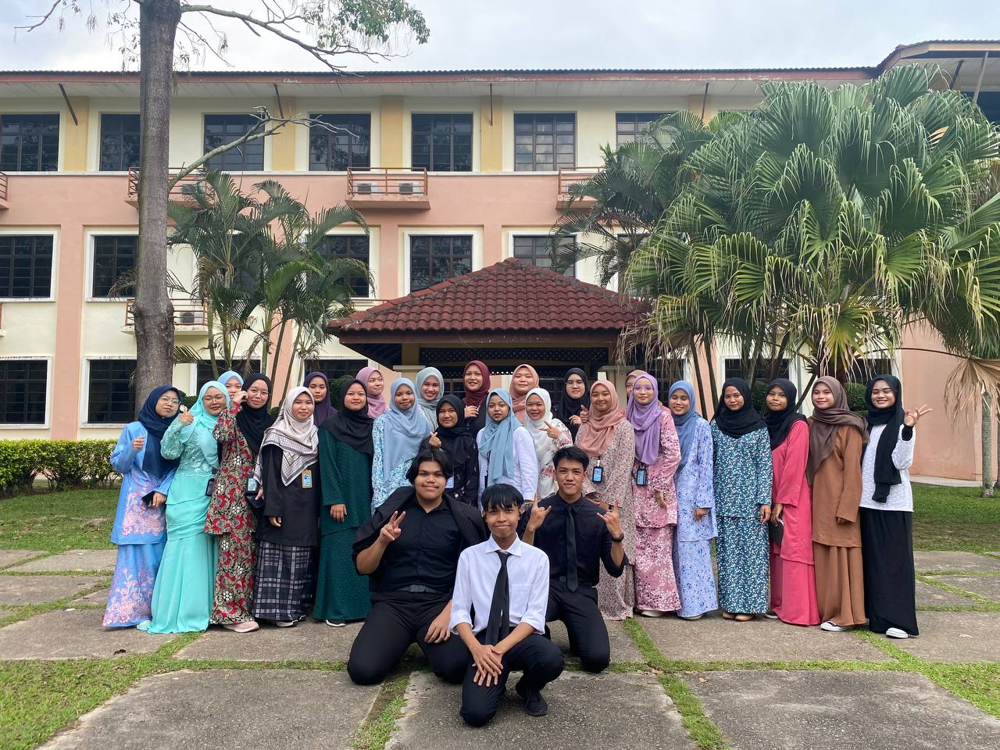

My Educational Background
I have a diverse educational background that has shaped my knowledge and skills.
Formal Education
- Diploma In Information Management - Universiti Teknologi Mara, 2022
- SMK Khir Johari (2017) SMKA Slim River (2017-2019) SMK USJ 13 (2020-2022) - High School

Certifications
- Best Student (SMK USJ 13) - 2022
- Data Science Professional Certificate - Online Course, 2022
Skills Acquired
Through my education, I have acquired skills in basic programming (C++), HTML, video editing, and problem-solving.